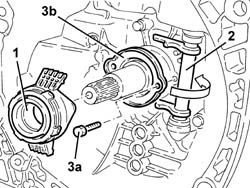

2110C24 seals for gearbox input shaft - r r for manual gearbox with hydraulic selection versions
- Path
- Procedures > 21 GEARBOX > 2110 MANUAL GEARBOX AND DIFFERENTIAL > 2110C gear cases and covers of manual gearbox with differential > 2110C24 seals for gearbox input shaft - r r for manual gearbox with hydraulic selection versions
- Kind
- repair procedure (removal / refitting; the operation number is the code)
- Applies to
- all engines; all production periods
- Interactive page
- https://sloeber94.github.io/elrnDB-a156/en/#/3237927
Applies to: all engines; all production periods; only with equipment: Smart gearbox
 Removing
Removing
 Refitting
Refitting5530B52 Battery DRIP TRAY/SUPPORT - R.R.
2127C40 hydraulic speed selection hydraulic actuator unit and clutch - r r
4450B12 front or rear wheels (two) - r+r
7055B54 under-engine guard - r r
7055A43 central front grille - r r
7055A41 RIGHT FRONT GRILLE - R.R.
1076B50 exhaust pipe attachment to engine - r + r
1076A32 exhaust rigid mount - r r
1008A44 rear rigid mount - r r
1008B20 power unit intermediate mount flexible block - replace
2110A11 manual gearbox with differential - r r for versions with hydraulic selection
1. Remove the thrust bearing.
2. Rotate the clutch release bearing fork.
3. Undo the bolts (3a) and remove the gearbox input shaft (3b) seal.

Applies to: all engines; all production periods; only with equipment: Smart gearbox
Refitting
RemovingFit the gearbox input shaft seal and fix it using the bolts.
Place the thrust bearing back in its housing.
2110A11 manual gearbox with differential - r r for versions with hydraulic selection
1008B20 power unit intermediate mount flexible block - replace
1008A44 rear rigid mount - r r
1076A32 exhaust rigid mount - r r
1076B50 exhaust pipe attachment to engine - r + r
7055A41 RIGHT FRONT GRILLE - R.R.
7055A43 central front grille - r r
7055B54 under-engine guard - r r Guard beneath engine].
4450B12 front or rear wheels (two) - r+r
2127C40 hydraulic speed selection hydraulic actuator unit and clutch - r r
2127C06 Electro-hydraulic selection manual gearbox HYDRAULIC SYSTEM - Bleeding air
Applies to: engines: 2.0 JTS, 2.0 JTS; all production periods; only with equipment: Smart gearbox
Removing
RefittingProceed with removal 5530B10 battery - r+r .
Proceed with removal 5530B52 Battery DRIP TRAY/SUPPORT - R.R. .
Proceed with removal 4450B12 front or rear wheels (two) - r+r .
Proceed with removal - 7055B90 Left front WHEEL ARCH LINER - R.R. .
Proceed with removal 7055B54 under-engine guard - r r .
Proceed with removal 2127C40 hydraulic speed selection hydraulic actuator unit and clutch - r r .
Proceed with removal 7055A43 central front grille - r r .
Proceed with removal 7055A41 RIGHT FRONT GRILLE - R.R. .
Proceed with removal 7055B10 Front BUMPER - R.R. .
Drain the air conditioner coolant circuit 5040A10 Air conditioning refrigerant CIRCUIT - Draining and Refilling .
Proceed with removal 5040A20 air conditioner compressor - r+r - includes fluid level check and top up if necessary .
Proceed with removal 5040A26 compressor mount - r r .
Proceed with removal 1076A48 catalytic converter heat shield - r r .
Proceed with removal 1080B62 catalytic converter - r + r .
Proceed with removal 2110A11 manual gearbox with differential - r r for versions with hydraulic selection .
1. Remove the thrust bearing.
2. Rotate the clutch release bearing fork.
3. Undo the bolts (3a) and remove the gearbox input shaft (3b) seal.
Applies to: engines: 2.0 JTS, 2.0 JTS; all production periods; only with equipment: Smart gearbox
Refitting
RemovingFit the gearbox input shaft seal and fix it using the bolts.
Place the thrust bearing back in its housing.
Proceed with refitting 1080B62 catalytic converter - r + r .
Proceed with refitting 1076A48 catalytic converter heat shield - r r .
Proceed with refitting 5040A26 compressor mount - r r .
Proceed with refitting 5040A20 air conditioner compressor - r+r - includes fluid level check and top up if necessary .
Refill the gearbox/differential using the recommended fluid 0010T40 hydraulic system fluid for gearbox with hydraulic selection check level and top up if necessary .
Proceed with refitting 7055B10 Front BUMPER - R.R. .
Proceed with refitting 7055A41 RIGHT FRONT GRILLE - R.R. .
Proceed with refitting 7055A43 central front grille - r r .
Proceed with refitting 2127C40 hydraulic speed selection hydraulic actuator unit and clutch - r r .
Proceed with refitting 2127C04 ELECTROHYDRAULIC selection gearbox hydraulic system FLUID - Check level and top up if necessary. .
Proceed with refitting 2127C06 Electro-hydraulic selection manual gearbox HYDRAULIC SYSTEM - Bleeding air .
Proceed with refitting 7055B54 under-engine guard - r r .
Proceed with refitting - 7055B90 Left front WHEEL ARCH LINER - R.R. .
Proceed with refitting 4450B12 front or rear wheels (two) - r+r .
Proceed with refitting 5530B52 Battery DRIP TRAY/SUPPORT - R.R. .
Proceed with refitting 5530B10 battery - r+r .
Fill the air conditioner coolant circuit 5040A10 Air conditioning refrigerant CIRCUIT - Draining and Refilling .
Topics linked from this page (21)
- 0010T40 hydraulic system fluid for gearbox with hydraulic selection check level and top up if necessary
- 1008A44 rear rigid mount - r r
- 1008B20 power unit intermediate mount flexible block - replace
- 1076A32 exhaust rigid mount - r r
- 1076A48 catalytic converter heat shield - r r
- 1076B50 exhaust pipe attachment to engine - r + r
- 1080B62 catalytic converter - r + r
- 2110A11 manual gearbox with differential - r r for versions with hydraulic selection
- 2127C04 ELECTROHYDRAULIC selection gearbox hydraulic system FLUID - Check level and top up if necessary.
- 2127C06 Electro-hydraulic selection manual gearbox HYDRAULIC SYSTEM - Bleeding air
- 2127C40 hydraulic speed selection hydraulic actuator unit and clutch - r r
- 4450B12 front or rear wheels (two) - r+r
- 5040A10 Air conditioning refrigerant CIRCUIT - Draining and Refilling
- 5040A20 air conditioner compressor - r+r - includes fluid level check and top up if necessary
- 5040A26 compressor mount - r r
- 5530B10 battery - r+r
- 5530B52 Battery DRIP TRAY/SUPPORT - R.R.
- 7055A41 RIGHT FRONT GRILLE - R.R.
- 7055A43 central front grille - r r
- 7055B10 Front BUMPER - R.R.
- 7055B54 under-engine guard - r r